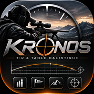

Politique de confidentialité
Qui édite Kronos
Kronos est développé par un particulier, à titre non commercial. Le code source est public : github.com/Helmet-Legend/Kronos. Pour toute question sur vos données, écrivez à l’adresse de contact indiquée sur la fiche Google Play de Kronos, ou ouvrez un ticket sur la page Issues du projet.
Les données enregistrées sur votre téléphone
Vos armes, munitions, réglages, compteurs de coups, séances du carnet, mesures au chronographe et essais de développement de charge sont enregistrés dans le stockage de l’application sur votre appareil (IndexedDB du navigateur). Ils ne sont envoyés à personne, ni à l’éditeur de Kronos, ni à Google, ni à un autre service.
Vous pouvez tout effacer à tout moment : Réglages, puis « Réinitialiser l’application », ou en désinstallant Kronos.
Ce qui sort de l’appareil, et quand
| Donnée | Quand | Destinataire et usage |
|---|---|---|
| Position approximative (latitude et longitude arrondies à 100 m environ) | Seulement quand vous touchez « Météo automatique », après votre accord à la demande de localisation du téléphone | Open-Meteo, pour obtenir la température, la pression, l’humidité et le vent à cet endroit. Kronos ne garde pas la position : il ne conserve que la météo reçue. |
| Adresse IP et données techniques de connexion | Au téléchargement de l’application et de ses mises à jour, et lors d’une demande météo | GitHub (hébergeur de Kronos, voir sa déclaration de confidentialité) et Open-Meteo, comme pour toute page web. Kronos n’y ajoute aucun identifiant. |
Sans réseau, Kronos fonctionne entièrement : la météo se saisit à la main.
Appareil photo et photos
La photo d’une cible sert à placer les impacts. Elle est traitée sur le téléphone et n’est ni enregistrée ni envoyée : seules les positions des impacts sont gardées dans le carnet.
Micro
Kronos n’utilise pas le micro. Si une fonction en a besoin un jour (comptage des coups), elle sera facultative, coupée par défaut, et le son sera analysé sur le téléphone sans être enregistré ni envoyé ; cette page sera mise à jour avant.
Sauvegardes
Les sauvegardes sont des fichiers créés à votre demande (Réglages, « Exporter »). Vous choisissez où les mettre. Elles peuvent être chiffrées par un mot de passe (AES-GCM) ; Kronos ne connaît pas ce mot de passe et ne peut pas le retrouver.
Ce que Kronos ne fait pas
- Pas de compte, pas d’inscription, pas d’adresse e-mail demandée.
- Pas de publicité, pas de mesure d’audience, pas de traceur ni de cookie publicitaire.
- Pas de vente ni de partage de données.
- Pas d’accès aux contacts, aux fichiers ou aux autres applications.
Vos droits
Comme vos données ne quittent pas votre téléphone, vous les contrôlez directement : consultation, export, modification et suppression se font dans l’application. Pour les données traitées par GitHub ou Open-Meteo, adressez-vous à eux. Vous pouvez aussi saisir la CNIL (cnil.fr).
Changements
Toute modification de cette politique sera publiée sur cette page, avec sa date, avant d’entrer en vigueur.